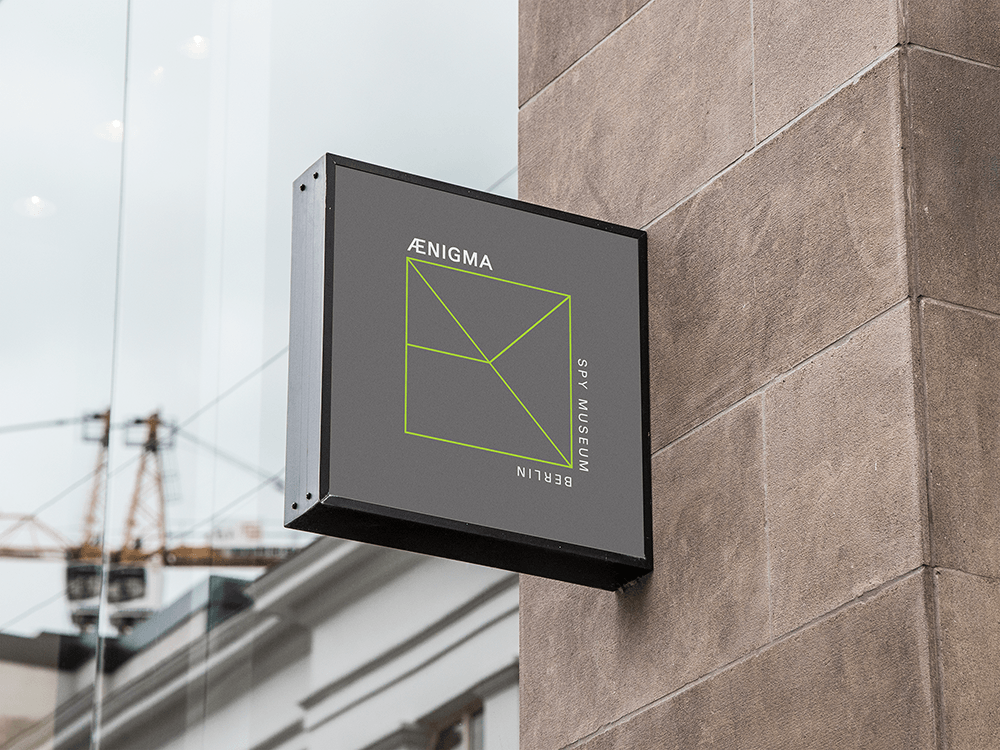
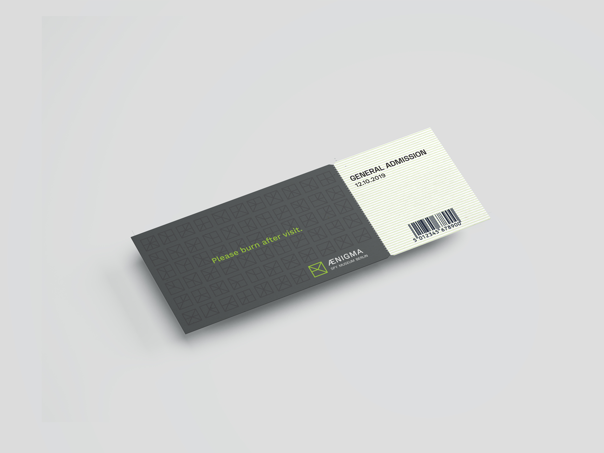
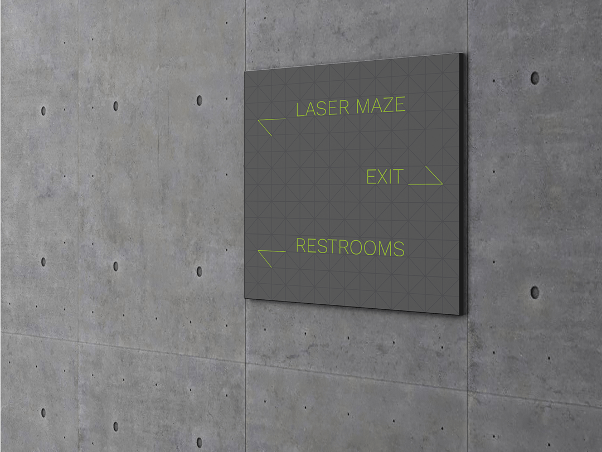
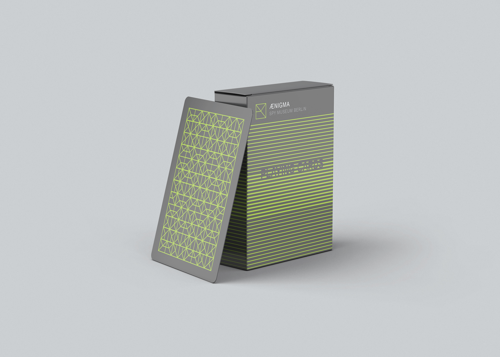
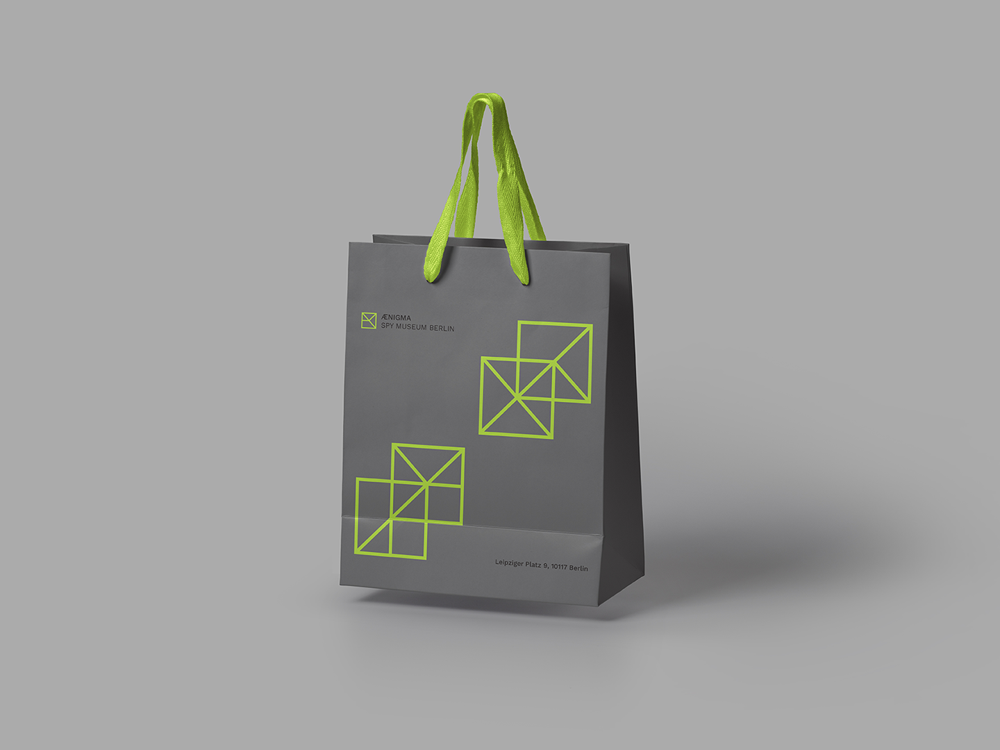

The logo design visually represents “look again”, the new concept of the rebranded Spy Museum Berlin, now named as Aenigma. Much like being a spy and having to scrutinize for clues, the various ways of reading letters A and E incites curiosity, and playfully invites people to visit and revisit.



Entry ticket, Wayfinding Signage, and Poster


Playing Cards, and Gift Shop Bag